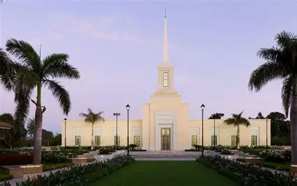
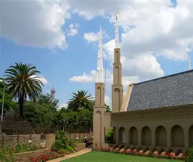
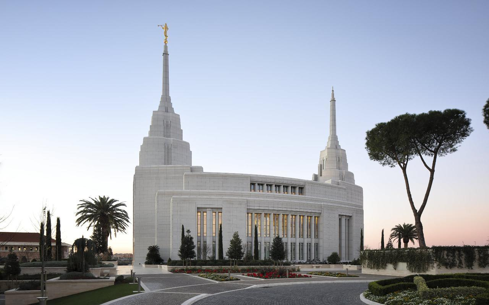
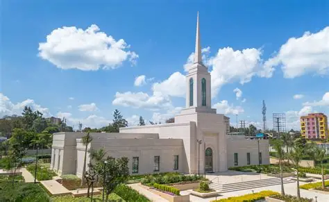
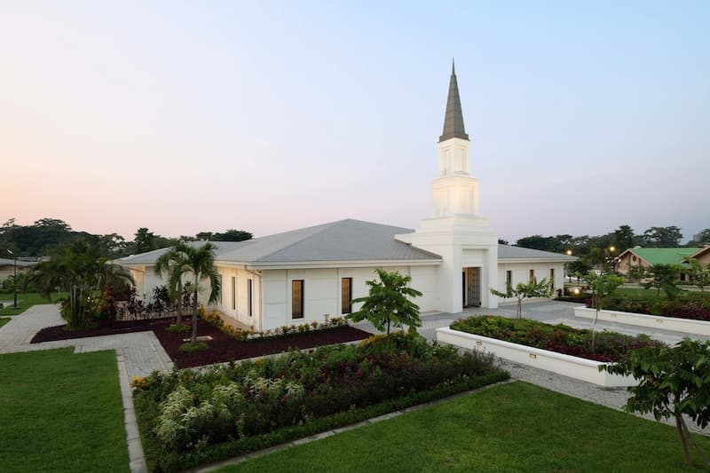
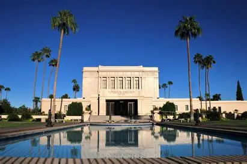

Temple Album
Home
Old
New
Large
Small
Temple Album Directory

Harare Zimbabwe Temple

Johannesburg South Africa Temple
Salt Lake Temple
Paris France Temple
Accra Ghana Temple

Rome Italy Temple

Nairobi Kenya Temple

Kinshasa DRC Temple

Mesa Arizona Temple